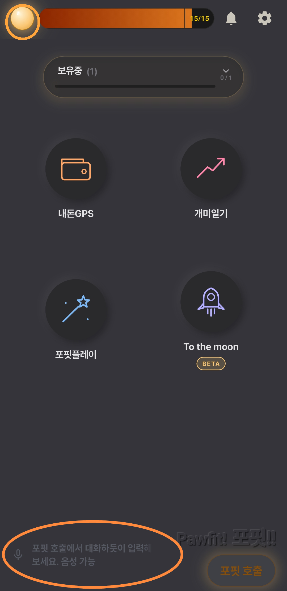
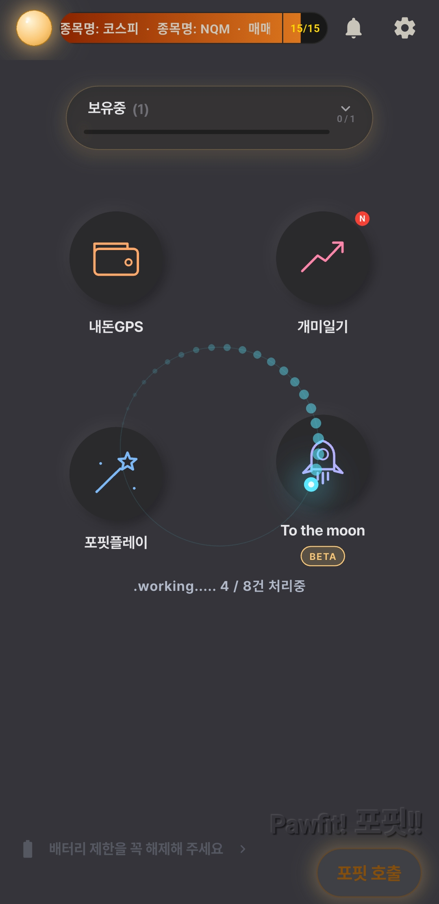
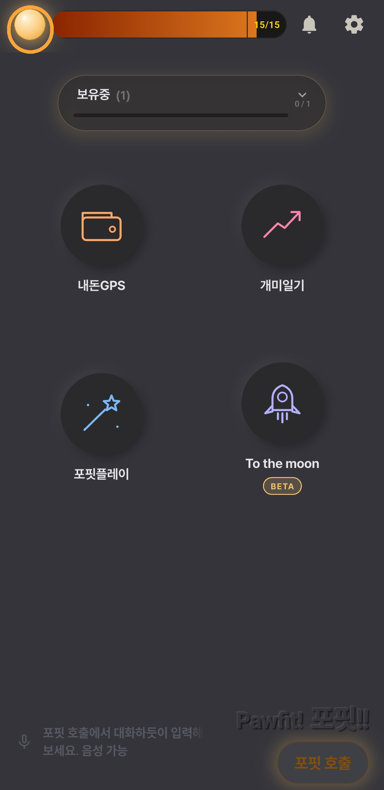
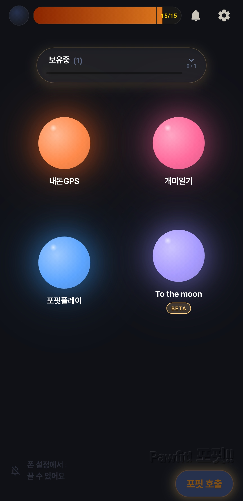
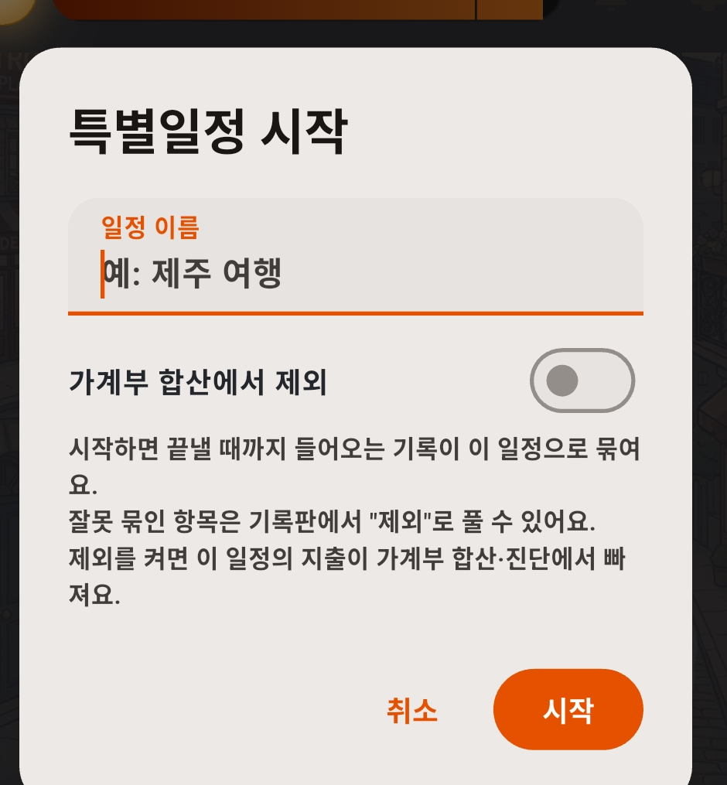
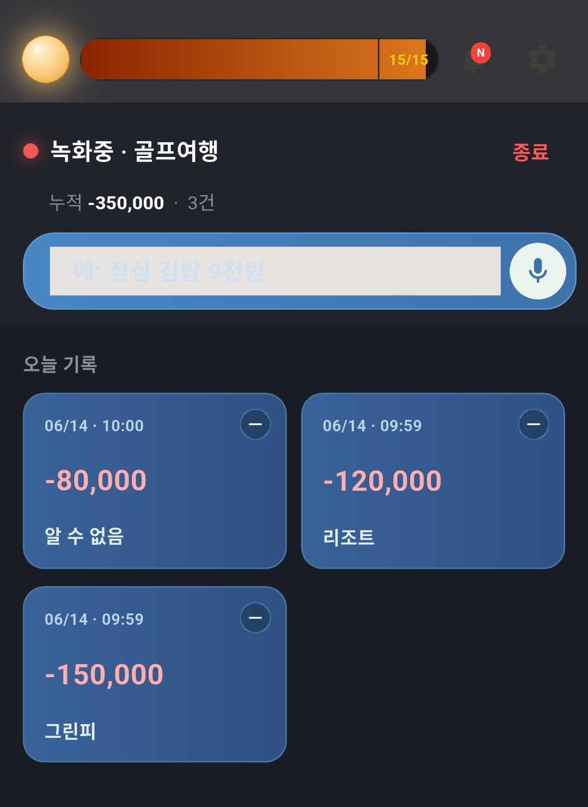
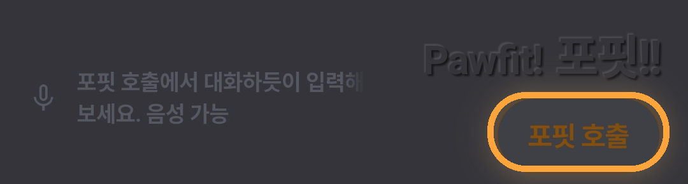
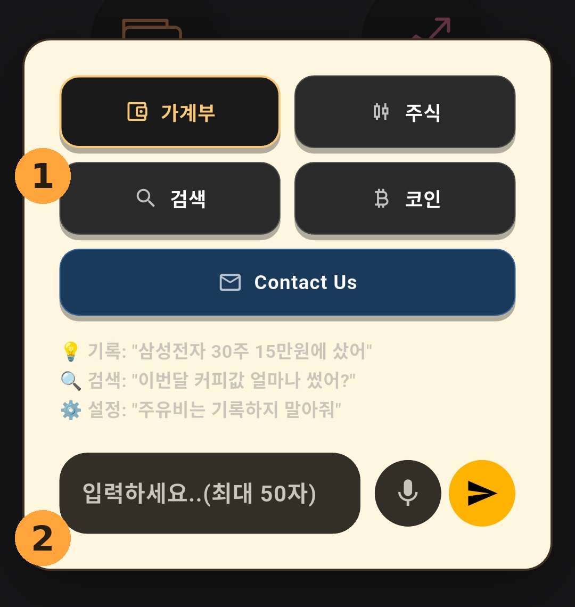

💡 가이드 다시 보기 이 가이드는 홈 왼쪽 아래에 흐르는 힌트 글자(아래 사진)를 탭하면 언제든 다시 열어 볼 수 있어요.

홈 왼쪽 아래 — 주황 동그라미 친 흐르는 힌트를 탭하면 가이드가 다시 떠요
1
포핏은 알림으로 기록해요
카드 결제, 주식 체결, 계좌 입출금… 폰에 뜨는 알림을 포핏이 읽고 AI가 해석해서 자동으로 기록합니다. 직접 입력할 필요가 없어요.

알림이 쌓이면 포핏이 알아서 차례로 처리해요. (4 / 8건 처리중)
알림은 모아뒀다가, 앱을 열면 적기 시작해요. 포핏은 평소에 도착한 알림을 차곡차곡 저장해 두고, 앱이 다시 켜질 때 일지 작성을 시작합니다. 몇 건 안 될 때는 금방 끝나지만, 알림이 많이 쌓이면 처리 시간도 그만큼 길어져요. 가끔씩 앱을 열어 포핏이 일할 시간을 주세요! 🐾
꼭! 첫 실행 시 이동하는 알림 접근 권한이 없으면 앱이 감지를 할 수 없습니다. 폰 설정에서 배터리 제한을 풀어주면 혹시 모를 알림 놓침을 방지할 수 있습니다.
카카오톡으로 알림을 받는다면 (중요!)
증권사·카드사 알림을 카카오톡으로 받고 있다면, 설정 두 가지만 챙겨 주세요.
카톡 알림 표시를 "이름+메시지"로 — 카카오톡 앱의 설정 → 알림 → 알림 표시에서 이름+메시지(제목+내용)를 선택해 주세요. 내용 없이 "새 메시지가 도착했습니다"만 뜨면 포핏도 읽을 내용이 없어요.
알림이 시끄러우면 "무음"으로 — 폰 설정 → 애플리케이션 → 카카오톡 → 알림에서 소리만 꺼 주세요(무음/소리 없음). 알림이 조용히 떠도 포핏은 똑같이 읽습니다.
⚠️ 알림을 아예 끄면(차단) 안 돼요. 알림 자체가 사라지면 포핏도 읽을 수 없어 기록이 멈춥니다. 무음까지만!
2
홈화면 둘러보기
홈에는 네 개의 방이 있어요 — 내돈GPS(가계부), 개미일기(매매일지), 포핏플레이, To the moon(코인일지).
왼쪽 위 구슬이 모드 토글 스위치예요. 한 번 누르면 일지모드 ↔ 비주얼모드가 전환됩니다.


구슬 토글을 누르면 일지모드 ↔ 비주얼모드로 전환!
포핏 체력바 — 하루치 일할 힘
모드 토글 옆, 흐르는 글자와 겹쳐 보이는 가는 게이지가 포핏 체력바예요. 포핏이 하루 동안 일할 수 있는 체력이라, 알림을 처리할 때마다 조금씩 줄어듭니다. 체력은 매일 새로 채워져요.
체력을 다 쓰면 그날의 알림은 잠시 쌓아뒀다가 밤 10시 이후에 한 번에 몰아서 처리해요. 기록이 사라지는 게 아니니 안심하세요.
게이지 끝의 15/15는? 포핏에게 분석을 요청할 수 있는 횟수예요. 포핏의 시선, 예상노트 같은 분석 기능을 쓸 때 하나씩 줄어듭니다.
홈 2페이지 — 옆으로 넘기면
홈을 좌우로 스와이프하면 두 번째 페이지가 나와요. 여기서 포핏 플렉스(특별일정)를 시작하고, 가계부에 단 메모를 모아보는 최근 메모 카드도 볼 수 있어요.

"특별일정 시작하기" → 이름 입력 후 시작 (가계부 합산에서 빼려면 스위치 ON)
시작하면 끝낼 때까지 들어오는 기록이 이 일정으로 자동으로 묶여요. 진행 중엔 홈 2페이지가 기록 화면으로 바뀌어, 그 기간에 들어온 기록이 한눈에 보입니다.

진행 중 — "녹화중" 표시와 함께 그 기간 기록이 모여요
특별일정(포핏 플렉스)이 뭐예요? 여행·행사처럼 특정 기간의 지출을 따로 묶어 보는 기능이에요. 끝난 일정 모아보기·정리는 포핏플레이 가이드에서 자세히 다뤄요.
2페이지엔 최근 메모 카드도 있어요 — 가계부 항목에 단 메모가 여기 모입니다. 메모 다는 법은 내돈GPS 가이드를 참고하세요.
3
포핏 호출 — 말하듯 기록·검색
알림으로 못 잡는 현금 지출이나 메모, 지난 기록 검색은 포핏 호출로 해결해요. 홈 오른쪽 아래 버튼을 눌러 주세요.

홈 오른쪽 아래 — 포핏 호출 버튼

포핏 호출 창 — ① 섹션 선택 → ② 말하듯 입력
기록할 곳을 선택 — 가계부 · 주식 · 코인 중 어디에 적을지 골라요.
말하듯 입력 — 타이핑, 음성, 복사·붙여넣기 모두 가능해요. 예) "삼성전자 30주 15만원에 샀어" → 선택한 일지에 바로 기록!
보유 종목도 여기서 — 기존에 보유한 종목이 있다면 여기서 저장해 놓으세요. 일지에서 바로 보실 수 있어요.
검색 — 물어보면 찾아줘요
검색하고 싶은 게 있으면 포핏에게 대화하듯이 입력해 주시면 됩니다. 예) "이번달 커피값 얼마나 썼어?" 한 건 찾기든, 기간별 합계든, 항목을 묶어 보는 것이든 포핏이 알아듣고 찾아옵니다.
Contact Us — 개발자에게 바로
건의나 질문이 있으면 Contact Us에 편하게 적어 보내 주세요. 개발자에게 메시지가 바로 전달돼요. 가입도, 메일 주소도 필요 없어요.
4
매매 알림은 "자세한 형식"으로
주식·코인 매매 기록의 정확도는 알림에 담긴 정보량이 좌우해요. 종목·수량·단가가 또렷한 알림일수록 정확하게 기록됩니다.
카드 결제는 괜찮아요. 카드사 알림은 짧아도 가맹점·금액이 잘 담겨 있어 그대로 기록됩니다. 이 권장은 주식·코인 매매에만 해당해요.
증권사 앱에서 설정하기
증권사 앱의 알리미(알림) 신청 메뉴에서 체결통보 수신 방법을 카카오톡처럼 항목이 자세히 오는 채널로 선택해 주세요. 짧은 푸시만 오는 경우보다 기록이 훨씬 정확해져요.